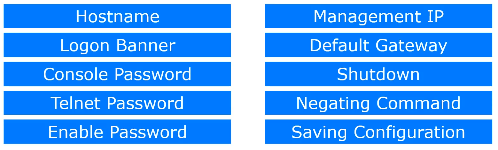

Task : You got a new switch to configure
You need to configure

We'll emulate the whole procedure over Cisco Packet tracer:
Step 1 : Open Cisco packet tracer and put a switch (2960) and left click once on it
Step 2: Go to CLI tab and input enable to get privileged access

then

And hostname configuration done
Que) What is hostname?- Its the name with which we'll identify the switch

Banner message set
Que) What is logon banner?- Its the message that we will se when we log on to switch


Console Password set
Que) What is console password?
It creates a layer of security by asking password to connect to the switch


Telnet is configured